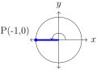

Chapter 7 Solutions
\subsection*{Solutions for 1.2.28}
Solution 1.-
We are given the angular speed is \(\omega=180\) revolutions per minute. To convert our angular speed to radians per minute, we use the fact that one revolution is \(2\pi\) radians to get
\begin{equation*} \omega=180\frac{\mbox{revolution} }{\mbox{minute} }=180\frac{\mbox{rev} }{\mbox{minute} }\cdot2\pi\frac{\mbox{radians} }{\mbox{revolution} }=360\pi\frac{\mbox{radians} }{\mbox{minute} } \end{equation*}Thus the oeoe is moving at an angular speed of \(360\pi\) radians per second.
-
Since the radius is \(r=3\) ft and the angular speed is \(\omega=180\) is measure in radians per minute we can Definition 1.2.26 to calculate the linear speed
\begin{equation*} v=r\omega=3\mbox{ft} \cdot360\pi\frac{\mbox{rad} }{\mbox{min} }\cdot\frac{\mbox{mile} }{5280\mbox{ft} }\cdot\frac{60\mbox{min} }{\mbox{hr} }\approx38.56\frac{\mbox{miles} }{\mbox{hour} } \end{equation*}Thus the girl swinging the oeoe is moving shell at a linear speed of 38.56 mph.
\subsection*{Solutions for 1.3.10}
Solution 2.In Quadrant II, the associated angle is \(t=\pi-\frac{\pi}{3}=\frac{3\pi}{3}-\frac{\pi}{3}=\frac{2\pi}{3}\) Alternative solution: Since \(t'=\frac{\pi}{3}=\frac{1\pi}{3}\text{,}\) then \(t=\frac{(3-1)\pi}{3}=\frac{2\pi}{3}\)
In Quadrant III, the associated angle is \(t=\pi+\frac{\pi}{3}=\frac{3\pi}{3}+\frac{\pi}{3}=\frac{4\pi}{3}\) Alternative solution: \(t=\frac{(3+1)\pi}{3}=\frac{4\pi}{3}\)
In Quadrant IV, the associated angle is \(t=2\pi-\frac{\pi}{3}=\frac{6\pi}{3}-\frac{\pi}{3}=\frac{5\pi}{3}\) Alternative solution: \(t=\frac{(2\cdot3-1)\pi}{3}=\frac{5\pi}{3}\)
In Quadrant II, the associated angle is \(t=180^{\circ}-30^{\circ}=150^{\circ}\)
In Quadrant III, the associated angle is \(t=180^{\circ}+30^{\circ}=210^{\circ}\)
In Quadrant IV, the associated angle is \(t=360^{\circ}-30^{\circ}=330^{\circ}\)
In Quadrant II, the associated angle is \(t=180^{\circ}-60^{\circ}=120^{\circ}\)
In Quadrant III, the associated angle is \(t=180^{\circ}+60^{\circ}=240^{\circ}\)
In Quadrant IV, the associated angle is \(t=360^{\circ}-60^{\circ}=300^{\circ}\)
-
When \(\theta=\frac{\pi}{2}\) radians (\(90^{\circ}\)), the point on the circle is \(P(0,1)\text{.}\)
Then \(x=0\) and \(y=1\) gives us\begin{align*} \sin \frac{\pi}{2}=\sin 90^{\circ}\amp =1,\amp \cos \frac{\pi}{2}=\cos 90^{\circ}\amp =0, \amp \tan \frac{\pi}{2}=\tan 90^{\circ}\amp =\mbox{undef} ,\\ \csc \frac{\pi}{2}=\csc 90^{\circ}\amp =1, \amp \sec \frac{\pi}{2}=\sec 90^{\circ}\amp =\mbox{undefined} , \amp \cot \frac{\pi}{2}=\cot 90^{\circ}\amp =0\text{.} \end{align*}Note that \(\tan\frac{\pi}{2}\) is undefined since \(\tan\theta=\frac{y}{x}\) only when \(x\neq0\) but at \(P(0,1)\) we have \(x=0\text{,}\) resulting in \(\tan\frac{\pi}{2}\) being undefined.
-
When \(\theta=\pi\) radians (\(180^{\circ}\)), the point on the circle is \(P(-1,0)\text{.}\)
Then \(x=-1\) and \(y=0\) gives us\begin{align*} \sin \pi=\sin 180^{\circ}\amp =0, \amp \cos \pi=\cos 180^{\circ}\amp =-1, \amp \tan \pi=\tan 180^{\circ}\amp =0,\\ \csc \pi=\csc 180^{\circ}\amp =\mbox{undef} , \amp \sec \pi=\sec 180^{\circ}\amp =-1, \amp \cot \pi=\cot 180^{\circ}\amp =\mbox{undef} \end{align*}
-
From
[cross-reference to target(s) "ex_reference-angle" missing or not unique], we have \(\theta'=\frac{\pi}{4}\text{.}\) The six trigonometric functions are\begin{align*} \sin \frac{\pi}{4}\amp =\frac{\sqrt{2}}{2}, \amp \cos \frac{\pi}{4}\amp =\frac{\sqrt{2}}{2}, \amp \tan \frac{\pi}{4}\amp =1,\\ \csc \frac{\pi}{4}\amp =\sqrt{2}, \amp \sec \frac{\pi}{4}\amp =\sqrt{2}, \amp \cot \frac{\pi}{4}\amp =1\text{.} \end{align*}Since \(\theta=-\frac{3\pi}{4}\) is in Quadrant III, we have that the \(x\)-value is negative and the \(y\)-value is negative. Thus we get
\begin{align*} \sin -\frac{3\pi}{4}\amp =-\frac{\sqrt{2}}{2}, \amp \cos -\frac{3\pi}{4}\amp =-\frac{\sqrt{2}}{2}, \amp \tan -\frac{3\pi}{4}\amp =1,\\ \csc -\frac{3\pi}{4}\amp =-\sqrt{2}, \amp \sec -\frac{3\pi}{4}\amp =-\sqrt{2}, \amp \cot -\frac{3\pi}{4}\amp =1\text{.} \end{align*} -
From
[cross-reference to target(s) "ex_reference-angle" missing or not unique], we have \(\theta'=\frac{\pi}{3}\text{.}\) The six trigonometric functions are\begin{align*} \sin \frac{\pi}{3}\amp =\frac{\sqrt{3}}{2}, \amp \cos \frac{\pi}{3}\amp =\frac{1}{2}, \amp \tan \frac{\pi}{3}\amp =\sqrt{3},\\ \csc \frac{\pi}{3}\amp =\frac{2\sqrt{3}}{3}, \amp \sec \frac{\pi}{3}\amp =2, \amp \cot \frac{\pi}{3}=\amp \frac{\sqrt{3}}{3}\text{.} \end{align*}Since \(\theta=\frac{4\pi}{3}\) is in Quadrant III, we have that the \(x\)-value is negative and the \(y\)-value is negative. Thus we get
\begin{align*} \sin \frac{4\pi}{3}\amp =-\frac{\sqrt{3}}{2}, \amp \cos \frac{4\pi}{3}\amp =-\frac{1}{2}, \amp \tan \frac{4\pi}{3}\amp =\sqrt{3},\\ \csc \frac{4\pi}{3}\amp =-\frac{2\sqrt{3}}{3}, \amp \sec \frac{4\pi}{3}\amp =-2, \amp \cot \frac{4\pi}{3}\amp =\frac{\sqrt{3}}{3}\text{.} \end{align*} -
From
[cross-reference to target(s) "ex_reference-angle" missing or not unique], we have \(\theta'=\frac{\pi}{6}\text{.}\) The six trigonometric functions are\begin{align*} \sin \frac{\pi}{6}\amp =\frac{1}{2}, \amp \cos \frac{\pi}{6}\amp =\frac{\sqrt{3}}{2}, \amp \tan \frac{\pi}{6}\amp \frac{\sqrt{3}}{3},\\ \csc \frac{\pi}{6}\amp =2 \amp \sec \frac{\pi}{6}\amp =\frac{2\sqrt{3}}{3}, \amp \cot \frac{\pi}{6}\amp =\sqrt{3}\text{.} \end{align*}Since \(\theta=\frac{11\pi}{6}\) is in Quadrant IV, we have that the \(x\)-value is positive and the \(y\)-value is negative. Thus we get
\begin{align*} \sin \frac{11\pi}{6}\amp =-\frac{1}{2}, \amp \cos \frac{11\pi}{6}\amp =\frac{\sqrt{3}}{2}, \amp \tan \frac{11\pi}{6}\amp -\frac{\sqrt{3}}{3},\\ \csc \frac{11\pi}{6}\amp =-2 \amp \sec \frac{11\pi}{6}\amp =\frac{2\sqrt{3}}{3}, \amp \cot \frac{11\pi}{6}\amp =-\sqrt{3}\text{.} \end{align*} -
From
[cross-reference to target(s) "ex_reference-angle" missing or not unique], we have \(\theta'=60^{\circ}\text{.}\) The six trigonometric functions are\begin{align*} \sin 60^{\circ}\amp =\frac{\sqrt{3}}{2}, \amp \cos 60^{\circ}\amp =\frac{1}{2}, \amp \tan 60^{\circ}\amp =\sqrt{3},\\ \csc 60^{\circ}\amp =\frac{2\sqrt{3}}{3}, \amp \sec 60^{\circ}\amp =2, \amp \cot 60^{\circ}=\amp \frac{\sqrt{3}}{3}\text{.} \end{align*}Since \(\theta=120^{\circ}\) is in Quadrant II, we have that the \(x\)-value is negative and the \(y\)-value is positive. Thus we get
\begin{align*} \sin 120^{\circ}\amp =\frac{\sqrt{3}}{2}, \amp \cos 120^{\circ}\amp =-\frac{1}{2}, \amp \tan 120^{\circ}\amp =-\sqrt{3},\\ \csc 120^{\circ}\amp =\frac{2\sqrt{3}}{3}, \amp \sec 120^{\circ}\amp =-2, \amp \cot 120^{\circ}\amp =-\frac{\sqrt{3}}{3}\text{.} \end{align*} -
Since \(\theta=\frac{7\pi}{3}>2\pi\text{,}\) we find the coterminal angle by subtracting by \(2\pi\text{:}\)
\begin{equation*} \frac{7\pi}{3}-2\pi=\frac{7\pi}{3}-\frac{6\pi}{3}=\frac{\pi}{3} \end{equation*}Therefore, the values of the six trigonometric functions are equivalent to when \(\theta=\frac{\pi}{3}\text{:}\)
\begin{align*} \sin \frac{7\pi}{3}\amp =\frac{\sqrt{3}}{2}, \amp \cos \frac{7\pi}{3}\amp =\frac{1}{2}, \amp \tan \frac{7\pi}{3}\amp =\sqrt{3},\\ \csc \frac{7\pi}{3}\amp =\frac{2\sqrt{3}}{3}, \amp \sec \frac{7\pi}{3}\amp =2, \amp \cot \frac{7\pi}{3}\amp =\frac{\sqrt{3}}{3}\text{.} \end{align*} -
Since \(\theta=480^{\circ}>360^{\circ}\text{,}\) we find the coterminal angle by subtracting by \(360^{\circ}\text{:}\)
\begin{equation*} 480^{\circ}-360^{\circ}=120^{\circ} \end{equation*}Therefore, the values of the six trigonometric functions are equivalent to when \(\theta=120^{\circ}\text{:}\)
\begin{align*} \sin 480^{\circ}\amp =\frac{\sqrt{3}}{2}, \amp \cos 480^{\circ}\amp =-\frac{1}{2}, \amp \tan 480^{\circ}\amp =-\sqrt{3},\\ \csc 480^{\circ}\amp =\frac{2\sqrt{3}}{3}, \amp \sec 480^{\circ}\amp =-2, \amp \cot 480^{\circ}\amp =-\frac{\sqrt{3}}{3}\text{.} \end{align*}
\subsection*{Solutions for 1.4.13}
Solution 5.\(x_2=120\sin22.5^{\circ}=45.9\) NM \(x_3=120\sin33.75^{\circ}=66.7\) NM \(x_4=120\sin45^{\circ}=84.5\) NM \(x_5=120\sin56.25^{\circ}=99.8\) NM \(x_6=120\sin67.5^{\circ}=110.9\) NM \(x_7=120\sin78.75^{\circ}=117.7\) NM \(x_8=120\sin90^{\circ}=120\) NM
\(y_1=120\cos11.25^{\circ}=117.7\) NM \(y_2=120\cos22.5^{\circ}=110.9\) NM \(y_3=120\cos33.75^{\circ}=99.8\) NM \(y_4=120\cos45^{\circ}=84.5\) NM \(y_5=120\cos56.25^{\circ}=66.7\) NM \(y_6=120\cos67.5^{\circ}=45.9\) NM \(y_7=120\cos78.75^{\circ}=23.4\) NM
To determine the movement of sand along the shore, we first construct the triangle.

The since we want to find the adjacent side to the known angle of \(60^{\circ}\) and we are given the hypotenuse, the trigonometric function that we will use is cosine:
Multiplying both sides by 10 and using the fact that \(\cos60^{\circ}=\frac{1}{2}\text{,}\)
The House Nālani in the quadrant Hoʻolua is three houses from ʻĀkau (North). Since each house is \(11.25^{\circ}\text{,}\) the waʻa is \(3\cdot11.25=33.75^{\circ}\) west of due north.
Let \(y\) be the distance traveled north. To calculate \(y\text{,}\) we first determine which trigonometric function to use. Since we need to use the side adjacent to our angle and the hypotenuse, we will use cosine:
So
Let \(x\) be the distance traveled west. Since we need to use the side opposite to our angle and the hypotenuse, we will use sine:
So
\subsection*{Solutions for 3.3.7}
Solution 9.\subsection*{Solutions [cross-reference to target(s) "ex-5_4" missing or not unique]}
Since we were able to write \(\tan\theta=\frac{839}{937}\text{,}\) we can use a calculator or other technology to evaluate the inverse tangent to find our angle:
Next we refer to the Star Compass with angles (Figure 1.2.4 on page 1.2.4) to conclude we will need to sail towards the House Manu Koʻolau.
To determine the distance, \(d\text{,}\) we use the Pythagorean Theorem:
Finally, we note that since (speed) = (distance)/(duration), we can rearrange the terms to get (duration) = (distance)/(speed). If we travel at 5 knots (5 NM/hr), we can calculate the duration as